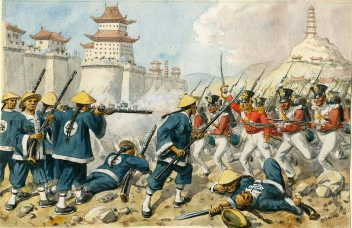

收录于合集 #理论研究 96个
=
作品简介
【作者】 Joshua Freedman，现欧柏林学院政治学访问助理教授（Visiting Assistant Professor），教授国际法、国际安全和巴以冲突等方面的课程。2019年在美国西北大学(Northwestern University)政治学系取得博士学位。主要研究领域为承认政治、身份政治以及国际政治中的地位冲突和外交。作者信息见：
https://www.joshuamfreedman.com/
【编译】 陈勇（北京大学国际关系学院，国政学人编译员）
【校对】 施榕
【审校】 扎西旺姆
【排版】 高佳美
【美编 】黄竹音
【来源】 Freedman, J. (2016). Status insecurity and temporality in world politics. European Journal of International Relations , 22(4), 797-822.
期刊简介
《欧洲国际关系杂志》（European Journal of International Relations，EJIR）是欧洲政治研究联盟国际关系常设小组（the Standing Group on International Relations of the European Consortium for Political Research, SGIR）的同行评审旗舰期刊, 由SGIR和欧洲国际研究协会组成的联合委员会共同管理，旨在发表国际关系领域经同行评审的学术贡献，从尖端的理论辩论到当代和历史层面的主题，再到国际关系学者和实践者均有涉及。2019年该刊影响因子为3.474，在95种国际关系类期刊中排名第6（6/95）。
**世界政治中的地位不安全感和时间性
**
Status insecurity and temporality in world politics
Joshua Freedman
内容提要
国际关系学者在解释国际体系中地位寻求行为时往往从社会比较理论（social comparison theory）及其观察中得到启发。个体通过与他人的社会比较来判断自己的价值，并由此获得自尊。根据这一逻辑，国家成为地位寻求者是因为它们就像个人一样，天生渴望在与同辈的比较中占据有利的社会地位。因此，有关大国地位的文献通常预先假定了地位的不安全感是由不利的社会比较发展而来的，可以通过相对的社会进步来解决。本文则挑战了这一假定，正如心理学已然承认的， 个人在自我评价时会同时使用社会（social）和时间（temporal）比较。 社会比较会让行为体问自己“与同龄人相比，我的排名如何?”“时间比较则让行为体评估他们是如何随着时间的推移而进步或者衰退的。本文提出了地位寻求行为的时间比较理论，表明许多与地位不安全相关的信号问题来自于国家如何评价其地位的基本差异，以及行为体是否优先进行时间比较而不是社会比较。本文将把当代中国为地位承认（status recognition）而进行的奋斗置于中国文明历史和台湾问题的语境下，分析其背后的意义。
文章导读
01
地位
在社会学文献中，地位被理解为一种分层现象，这种分层源于个体“根据其社会普遍承认的价值观”对他人做出的主观评价和判断（Scott, 1996: 100）。 阶级和财富这样的物质因素可能会影响一个人的地位，但它们不是唯一的决定因素。相反，一个人的地位是社会秩序的产物，依赖于“社会判断（social judgements）”和他人的承认（Bottero, 2005: 41）。
在国际关系领域，地位的概念来自于韦伯和涂尔干等学者，国际体系被类似社会秩序的术语概念化，其中隐含了地位等级制度。赫德利·布尔（Hedley Bull）（2002[1977]）和与他同时代的英国学派学者是这一思想的主要支持者，认为大国地位不是自动从一个国家的能力中产生的，而是通过（其他国家的）承认而授予的。根据这种逻辑，成功的承认有赖于两组行为体就所谓的交易条件达成协议。这个过程取决于两个条件：（1）行为体都对什么构成了“其社会的普遍公认的价值”达成了一致和（2）行为体都对构成地位承认的信号和实践，即通常所称的“地位标志（status markers）”达成了一致。
02
社会比较理论和时间比较理论
相当一部分国际关系文献大量借鉴了行为经济学和社会心理学的观点以及它们各自的观察结果，即个体通过与他人的比较来判断自己的价值，并由此获得自尊（Larson et al., 2014: 17）。根据社会比较理论，在缺乏“客观证据（objective evidence）”的情况下，个体会将自己与同辈的观点和能力进行比较，从而对自己的观点和能力做出自我评估性的判断（Leon Festinger, 1954: 118）。
同样地，当个体从不同社会群体的成员资格中获得部分身份时（Tajfel, 1978），他们也会从他们所在群体和参照群体的成就和品质的比较中获得显著的自尊（Larson and Shevchenko，2010:68）。据此，国家之所以成为地位寻求者是因为它们就像个人和群体一样渴望在与同辈进行社会地位的比较中获得有利的结果（Wohlforth, 2009: 35）。
然而， 当个体进行自我评价并通过与同辈的社会比较获得自尊时，他们也会进行自我评价，并通过与过去的（自我）进行时间比较来获得自尊。 这种逻辑首先由斯图尔特·艾伯特（Stuart Albert, 1977）的时间比较理论（temporal comparison theory）揭示出来。这种理论基于这样一个概念，即个体在评价自己的观点和能力时，不仅要看同辈，而且重要的是要看自己的过去。根据这一理论，由于个体需要长期保持一致的身份认同，他们会反复与过去的自己进行时间比较，努力消除那些可能代表能力下降的比较和威胁自我身份认同的因素。如皮茨（Peetz）和威尔森（Wilson）（2008: 2092）所解释的，个人需要把自己看作是随着生活进程而稳步提高的人。
03
世界政治中有关地位的时间比较理论
地位是一种社会现象，代表着一个人在既定的等级制度中被承认的位置。 因此，地位的不安全感可能来自于将自己的地位与地位更高的同辈进行的比较。然而，地位也会受到时间变化的影响。随着时间的推移，个体地位可能上升、下降、停滞不前，也可能出现不规则的波动。地位的独特性部分在于，许多情况下它看起来是不可改变的，允许个体或国家在导致（原有状态的）行为和属性消失很久之后仍然保持地位。
当然，不可否认的是，个体和国家可能会因为失去（他者）对其地位的承认而失去相应地位。国际体系的历史中既有失去权力但仍维持地位的国家，也有在征服和衰落的痛苦时刻同时失去权力和地位的国家。埃利亚斯（Elias，1996: 4）认为，那些“已经失去最高地位”的社会成员可能需要几个世纪的时间才能“接受这种地位的改变以及随之而来的自尊的下降”。许多关于集体记忆和国家人物传记的研究都认为国家经常围绕着一个共同的时间朝向（temporal orientation）而动员和组织起来。
将时间比较路径用于地位分析针对的就是这些行为体，意味着地位的不安全感可能不仅仅来自于不利的社会比较，而可能是行为体受其自身历史的压力和失败影响的结果。作者认为，应用这种方法的意义是双重的。首先，这意味着行动者更倾向于将地位承认与其眼中历史错误的纠正联系起来，而不是将其和通常与大国地位相关的俱乐部产品（club goods）和象征物进行联系。其次，它有助于指出一些学者倡导的“地位动机（status incentives）”文献中的问题。这些文献认为，作为国际体系中地位较高的行为体，美国处于一个能够安抚中国等具有“地位动机”的新兴行为体的独特位置：通过给予中国更高地位的承认换取后者在全球治理相关议题上的合作（Larson and Shevchenko, 2010: 67）。因此，这类文献的许多内容是以零和逻辑表述的，地位标志被认为是稀缺资源，对一个国家的地位承认只能以牺牲另一个国家为代价（Larson and Shevchenko, 2014: 41; Wohlforth, 2009: 30）。然而，如果一个国家的地位不安全感来自于不利的时间比较，那么在这些国家的观念中，成为大国的必要因素可能并不取决于这些被普遍接受的地位标志。
作者认为有两种方法可以将时间比较与现有的国关研究相结合。第一种方法是指出国家像个人一样也会进行时间比较。这些比较通常会影响到一些国家如何评估自己的地位。在忽略时间性的情况下，国际关系中的地位讨论可能缺少了对“为什么一些国家会表现出地位不安全行为（比如地位信号），而另一些国家则没有”的重要解释。第二种方法是指出时间性实际上可能会引导（inform）和调节（mediate）国家间的社会比较。作者发现这两种动力都在中国的案例中发挥了作用，不利的时间比较不仅影响了中国对地位承认的主观观念，而且还调节了与西方国家之间的社会比较。
04
世界政治中的历史和时间性
如果地位不安全感可能源于国家与他们的过去进行的不利的时间比较，则至少需要阐明历史观念如何影响国家在国际体系中的行为和身份。 这些领域在国际关系中都得到了很好的研究，杰维斯发起的认知心理学革命和更近期的建构主义者都试图将时间和历史与国家身份的形成联系起来。杰维斯用认知心理学来说明历史事件如何影响外交政策精英的知觉倾向（perceptual predispositions）。邝云峰（Khong, 1992）运用杰维斯的模型来分析美国不断升级越战的行为。与杰维斯一样，邝云峰主要关注外交决策者如何反复地、次优地（suboptimally）运用历史类比，以及这些倾向对外交政策行为的独立影响。作者认为本文的论点特别受益于这类研究中的两个要素。首先，外交决策者在安全和外交政策问题上反复地“在处理当前（问题）时求助于过去的（经验）”(Khong, 1992: 3)，这一论点为与时间相关的地位寻求行为提供了一种机制。其次，正如杰维斯(Jervis, 1976: 266)所假定的，决策者不仅为自己和他们那一代人的生活经历所影响，而且容易受到国家历史关键时刻的“遗传记忆（inherited memories）”的影响。
文章的论点是基于心理学对自我评价的社会形式和时间形式的既定区别。在国际关系中，类似的区别体现在学者如何概念化和解释国家身份形成的过程中。建构主义者提出了两种核心主张：（1）国家主要根据他者定义自己；（2）此后国家的身份依赖于反复的社会承认（social recognition）的过程。这两种主张都认为群体的凝聚力和身份认同产生于“我者”和“他者”的区别（Lebow, 2008: 8）。尽管承认这一点，韦弗（Waever）认为自我和他者的区别不仅局限于社会和空间之中，相反也可以是时间关系的产物。国家的认同可以从时间意义的自我比较中构建，即将过去的自己作为负面他者，正如它通常在与社会意义上的负面他者的比较中建构一样。作者指出，建构主义研究的两个核心要素对本文论点发挥了作用。首先，国家身份可以综合社会和时间形式的差异化（与他者的比较，differentiation），这一逻辑与本文对自我评价的社会和时间形式的关注有相似之处。其次，关于“将过去的自己作为负面他者（negative temporal othering）”的实践的有更具体的研究参考，这与威尔森（Wilson）和罗斯（Ross）（2001: 574）的主张相似，即个体有一种倾向，出于“一种愿意评价当前自我的愿望”将自己与“低劣的过去的自我（inferior past selves）”进行比较。
05
中国
尽管地位在有关中国崛起的大量文献中经常被提及，但只有一小部分研究从方法论上概述了地位不安全感在何种条件下得以被观察。
第一种观点从体系层面入手，假定存在客观属性来评估行为体在国际体系中的地位。但这种方法存在一些问题。最重要的是，国际体系缺乏中央权威，不像国内政治那样能够“制造和执行一套公认的地位标记”（Pouliot, 2014: 193）。
第二种观点要求将研究重点从外界如何确定行动者的地位转移到行动者如何主观地感知自己的地位。为此，学者们通过观察一些行为来推断中国的地位不安全感，他们认为这些行为清楚地表明了中国对更高地位的追求。一种更为常见的做法认为个人通过获得地位象征和模仿高地位的社会更间接地表明他们对更高地位的渴望，国家也不例外。
为说明中国的地位不安全感反映了社会和时间形式的自我评估之间的差别，需要做出以下三种观察：（1）中国经历了地位丧失的关键节点；（2）中国以先前损失来评估其当代地位，因而采取了时间评估的形式；（3）中国认为，对自己被承认为大国而言所必需的信号取决于是否解决这种不利的时间比较。
06
地位损失和下降

中国的19世纪的叙事是一个走下坡路的悲剧性故事。随着1839年第一次鸦片战争而来的是英国的一系列要求、中国的让步和“不平等条约”，打破了清王朝优越感和不可侵犯感。同样地，败给工业化的西方国家并不仅仅代表着财富和领土损失，也引发了一个自认为是“已知世界的中心”（the center of the known world）（Zhang, 2011: 308）的国家的身份认同危机。
《南京条约》和加入欧洲主导的国际体系要求中国正式接受主权平等的法律原则（Suzuki, 2009:58）。主权平等作为欧洲大陆外交关系的首要基础，直接违背了清朝对中国中心体系的理解，它暗示中国只是众多国家中的一个（Kissinger，2011:45）。作为一种国际治理理念，主权平等消除了朝贡制度的不对称性，而朝贡制度是中国几个世纪以来享有高地位的基础。此外，虽然中国在《南京条约》的支持下加入了主权平等的欧洲国家体系，但它是作为一个“不平等的主权国家”加入的。19世纪，中国实际上面临着双重悲剧：理论上，中国由于失去了不对称的关系而失去了地位；在实践中，中国与欧洲列强之间被强加了一种不利的地位等级制度。随着朝贡制度的崩溃，中国的急剧衰落就开始了。
07
时间意义上的自我评估
19世纪中期衰落之后的大部分时间里，中国经受着一个不利的时间比较。如罗德明（Dittmer）和塞缪尔·金（Kim）（1993: 27）在关于中国民族认同的开创性研究中所提到的，不发达国家会感受到“某种民族自卑情结（national inferiority complex）”，这种感觉在中国尤其明显，因为其传统的国家地位是非常高的。地位下降对中国整整一代政治精英和公众的破坏性影响已经得到了充分的证明。如张锋（2011：315）所指出的，新中国建立后的中心任务是恢复中国的独立自主和大国地位，这一任务是由“中国过去的伟大和最近的苦难之间的痛苦对比”推动的。
这种“复兴”叙事并没有随着时间的推移而减弱。阎学通（2001:34）认为，当代中国精英的话语中不断使用“振兴中华”（“振兴中国”）的口号，更多是为了恢复中国失去的国际地位，而不是为了“获得新东西”。关键的是，这种时间取向并不局限于精英阶层。如彼得·海斯·格里斯（Gries，2006: 328)所言，在过去的二十年里，百年耻辱作为中国民族主义的一个有力特征重新出现。
通过具体案例的分析，作者得到了两个重要的观察结果。首先，中国的普通人和精英阶层在评价自己的国家以及从时间维度看国家地位时有一种可观察的一致做法。至关重要的是，这些时间比较并不是凭空存在的。中国不只是通过比较自己在当前和过去的位置来评估自己的地位，它还利用与过去的比较来了解和评估本国与其他国家的当前关系。第二个重要观察是，时间比较也为地位标记提供了基础，个人或国家在使用时间比较时会依赖自己过去的经验和特征作为评价当代地位的标志。
08
台湾
在许多方面，中国大陆与台湾当局的长期对立促使与地位不安全感相关的负面时间比较长期存在。台湾的重要性不只体现在目前领土分裂的局面上，导致该局面的因素，以及这种局面对中国政治文化的象征性影响同样重要。
无论是由于精英的操纵，还是民众的固有观念，失去台湾都象征着中国在百年耻辱中地位的丧失所带来的一切破坏，强化了负面的时间比较。正如邓勇（2008：245）所指出的，台湾作为国家地位丧失的焦点，如今也成为“中国获得大国地位承认的重要标志”，使得中国很难想象在没有统一台湾的情况下得到地位承认。
甲午战争战败后，台湾被割让给日本。铃木胜吾（Suzuki, 2009：174）认为，甲午战争在很多方面是“两种国际秩序冲突的高潮”。19世纪末，积极寻求进入西方文明秩序的日本意图消除朝贡体系的最后残余，而中国则致力于在东亚维护朝贡体系。因此，失去台湾不仅代表着领土的丢失，更重要的也是文明的挫败。它与衰落的文明叙事生动地交织在一起，而衰落正是中国百年屈辱的特征（Xu, 2012:70）。
国共内战后，一场外交竞赛随之而来，新成立的中华人民共和国和台湾当局开始争夺（国际社会）对其作为中国政府的唯一代表的承认。而从20世纪80年代末开始，台独运动导致外交冲突的性质开始发生变化，“对中国的认同和统一的前景造成了根本性的问题。”（Xu, 2012:89）。
作者认为，有关台湾的这段历史有三个方面的含义。首先，只要台湾当局在政治上仍与大陆分离，中国就会继续存在一个根植于其文明历史中的统一问题（Xu，2012：66）。其次，台湾的分裂、美国的积极干预，以及分裂现状的延续都助长了一种迷思，即台湾只是（中国遭受）百年屈辱和伤害的一种当代形式（modern variant）。两种含义都表明，中国目前自我感知的大国地位在很大程度上取决于台湾的未来状况，因为中国的负面时间比较（negative temporal comparison）在台湾（问题上）是最突出的。依照上述逻辑，第三点含义是关于外部世界如何才能真正认识到中国的大国地位，并在当前现实下解决其地位不安全感的问题。
09
结论
本文重点研究地位不安全感的时间性，以拓展目前世界政治中关于地位的研究工作。作者以行为体可能通过与同行或与过去的自己进行比较来估计地位为前提，主张重新评估新兴大国如何衡量自己的地位，以及如何依此评价其他国家对地位的承认行为的问题。
此外，关于地位的时间性理论也不仅仅适用于中国，受益于这种研究路径的案例范围应涵盖其他历史上遭受重大地位损失的国家或政治共同体。同时，除了正面案例之外，可能的负面案例也可以提出有趣的挑战。本文展示的关于地位的时间性理论还使得有关地位动机的文献中提出的政策建议复杂化，因为过去的经历作为地位的度量标准是难以捉摸的。
译者评述
本文试图回答一些国家地位不安全感的来源问题，为地位寻求行为的动机提供一种分析思路。作者借用心理学中的时间比较理论探讨了中国的地位不安全感的来源。
现有研究中，关于地位和地位动机的解释大致分为三种理论路径：理性—工具主义视角(Rationalist–Instrumental Perspective)、社会—心理视角(Social-Psychological Perspective)和建构主义视角（Constructivist Perspective）[1]。从理性主义的视角看，更高的国际地位意味着更多的权利和利益，也意味着能够得到较低地位的国家的尊重。因此，国家追求更高的地位是为了增强自己的权力和影响力。在社会—心理视角的地位政治研究中，虽然同样承认高地位在某种程度上意味着获得特定的权利和利益，不排除地位动机具有工具属性，但这类文献认为，国家追求更高地位的动机与个体在群体的地位争夺行为类似，都是为了追求自尊和荣誉。在民族主义兴起，个体对国家的身份认同强化之后，社会心理层面的地位动机更加突出。[2]建构主义的视角则将地位与国家的身份认同相联系，是行为体“被承认的身份（recognized identity）”[3]。国家的地位动机是“本体安全（ontological security）” ，即追求稳定的社会身份和角色。依照这一分类体系，本文对中国地位不安全感的解释似乎兼有社会—心理路径和建构主义的理论视角的特点，反映出两者的某些交叉之处。作者强调中国的地位不安全感来自于与他者的“比较”。这种社会比较既符合个体试图寻求一种确定的自我定义的心理，也与建构主义视角下国家身份认同的形成过程有相近之处。而本文的主要创新点在于考虑时间性和时间比较对于国家的地位动机的影响。时间比较理论强调的是个体与某个历史时点中的“他者”，即该时间点的自我想象进行比较[4]。例如，在欧洲一体化的研究中，韦弗认为当代欧洲的他者既是“自己的过去”。在与以敌对性分裂为特征的威斯特伐利亚欧洲和主权国家体系的比较中，欧洲一体化得以将自己定义为一个“和平项目（peace project）”[5]。而在本文所述的案例中，引发不安全感的“他者”即为历史上的中国，并且是处于朝贡体系和“世界中心”，地位达到顶峰的“理想形象”。时间比较的难以捉摸导致国家地位追求行为的目标和动机具有了更强的不确定性。此外，本文最后也提到，根据“地位动机”做出的政策建议似乎不完全适用于按照时间比较逻辑所做的推断。从地位认知的时间性来看，缓解地位不安全感的关键不一定来自较高地位行为体的承认行为，而可能更多地与本国身份认同的转变相关。
当然，本文仍有需要进一步解答的问题。首先，如研究认知心理学的文献所指出的，认知理论的应用主要集中于个体、组织以及战略互动层次，因此在运用于国家行为的分析时存在不同层次之间的转移问题，即个体的认知如何转化为群体、组织、国家以及体系层次的认知变量[6]。无论是社会比较还是时间比较，分析的重点都是个体心理，在推广到国家的不安全感分析时可能需要更多的论据和分析，以完善相关的逻辑链条。
其次，社会比较和时间比较在地位不安全感形成过程中的关系似乎仍需要深入挖掘。例如，本文指出两者可能相互促进相互影响，但是何者在何种条件下可能成为不安全感的主要来源似乎有待阐述。艾伯特认为，如果行为体对基于本国历史构建的身份有着更强烈的感知，则社会比较居于次要地位；而如果行为体满足于在与他人的互动关系中确立身份，则时间比较不是必要的[7]。那么，影响行为体在政策宣示中对不同的身份构建和地位认知来源的重视程度的因素究竟有哪些？不难发现，尽管对于几乎所有国家而言，历史都是构建国家身份的关键要素，但不同国家对于“重塑历史地位”的重视程度似乎有所区别，甚至在同一国家，在不同历史时期或不同领导人的时代关于历史地位重要性的表述也会出现差异。戈茨（Götz）在评价拉森的社会—心理路径时指出，中国和俄罗斯的某些文化特质很可能是两国出现地位追求行为的部分原因。由此，从文化以及其他单元层次因素的角度入手探究在某个阶段两种比较之间的关系似乎有发展的空间。当然，在分析同一国家不同历史阶段的差异时，特定时期体系结构对于行为体的影响也不容忽视。
总之，从本文来看，考察地位政治中的时间性因素有助于丰富对行为体的地位动机和政策目标的理解，也有利于思考更全面的，更能够应对不确定性的政策建议
参考文献
[1] Götz, E. (2020). Status Matters in World Politics. International Studies Review. 0, 1–20
[2] LARSON, DEBORAH W., AND ALEXEI SHEVCHENKO. 2019a. Quest for Status: Chinese and Russian Foreign Policy. New Haven, CT: Yale University Press.
[3] MURRAY, MICHELLE. The Struggle for Recognition in International Relations: Status, Revisionism, and Rising Powers. Oxford: Oxford University Press.
[4] Albert, S. (1977). Temporal comparison theory. Psychological review, 84 (6), 485-503.
[5] Prozorov, S. (2011). The other as past and present: beyond the logic of’temporal othering’in IR theory. Review of international studies , 1273-1293.
[6] 尹继武.(2006).认知心理学在国际关系研究中的应用:进步及其问题. 外交评论(外交学院学报)(04),101-110.
[7] Albert, S. (1977). Temporal comparison theory. Psychological review, 84 (6), 485-503
文章观点不代表本平台观点，本平台评译分享的文章均出于专业学习之用, 不以任何盈利为目的，内容主要呈现对原文的介绍，原文内容请通过各高校购买的数据库自行下载
**
**
**
**
**
**
添加 “国小政”微信
获取最新资讯


国政学人
支持学术公益与知识传播
微信扫一扫赞赏作者 __赞赏
已喜欢，对作者说句悄悄话
取消 __
发送给作者
发送
最多40字，当前共字
上一页 1/3 下一页
长按二维码向我转账
支持学术公益与知识传播
受苹果公司新规定影响，微信 iOS 版的赞赏功能被关闭，可通过二维码转账支持公众号。